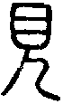
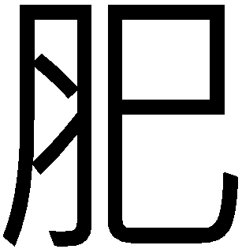
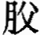

䷳ 艮卦（艮為山）
艮其背，不獲其身；行其庭，不見其人。无咎。初六，艮其趾，无咎，利永貞。六二，艮其腓，不拯其隨，其心不快。九三，艮其限，列其夤，厲薰心。六四，艮其身，无咎。六五，艮其輔，言有序，悔亡。上九，敦艮，吉。
|
彖曰：艮，止也，時止則止，時行則行，動靜不失其時，其道光明。（圖：小配） |
【卦名】
今本：艮 歸藏：很 帛書：根 清華簡：艮 上博簡：艮 海昏簡：根
艮字現今只用作《易經》卦名，不見於日常用語。《易傳》註解為「止」，停止之義。
《說文》：「艮，很也，从匕目。匕目，猶目相匕，不相下也。《易》曰：『艮其限。』匕目為艮，匕目為眞也。」艮字是兩目相比（匕通比），就是兩眼貼近對看而不相退讓，以表達「很」（狠）的意思。眞，借為嗔或瞋，都帶有狠義。
然而，傳統易學皆將艮解釋為止，停止之義，此與《說文》解釋大異其趣。段玉裁注：「很者不聽從也，一曰行難也，一曰盭也。《易傳》曰：『艮，止也。』止可兼很三義。許不依孔子訓止者，止，下基也，足也。孔子取其引伸之義。許說字之書，嫌云止則義不明審，故易之。此字書與說經有不同，實無二義也。《方言》曰：『艮，堅也。』《釋名》曰：『艮、限也。』」「目相匕即目相比，謂若怒目相視也。」
盭，音義通戾。據段玉裁說法，艮為很（狠），很即不順從的意思，另可解釋為行難、暴戾。至於《易傳》說的「艮，止也」除了是引申義，也能夠兼容《說文》所說的三義。《說文》是字書的立場，所以著重基本字義；而《易傳》是說經的立場，要能兼容並蓄。
艮的楷書寫法顯然經過訛變，主要是上面原本從目，今文變為從日。在小篆為上目下匕，匕為比之簡寫，其形構會「比目」之義。《說文》註說「很也」，很即《歸藏》卦名所作的「狠」義。鄭玄：「艮之言很也。」
就造字形構來看，艮的小篆與見字很像，差別在「見」下為「正人」，艮下的匕為「反人」，所以艮即「反見」，象徵人回頭而視，有別於「見」之正面看。黃宗炎：「艮為狠，艮有反見之象，无言笑面目可徵，故取其剛狠之義與？」黃宗炎即以「反見」解釋艮字。
當代古文字學家則以艮為顧。如唐蘭認為，「艮」應是「見」之變形，見為前視，艮則是回顧。李孝定從之：「（唐蘭）謂其義為反顧，較許說為長。」高亨《周易古經今注》：「艮從目從匕，匕即人之反文，則艮即見之反文明矣。故余謂艮者顧也，从反見。顧為還視之義，引申為注視之義。」顧即回頭看，引申則有回顧、注意、照顧之義。
從八卦取象來看，艮為終物成物之卦，《大象傳》中又多取成德育德之義，此又與艮字的照顧之義相通。
【卦義】
止、停止，重山阻擋去路。
艮字原義為顧，反身看、回頭看，或為狠視。引申又有小心、注意，照顧、養護的意思。在《周易》中卦義又引申為止，停止。
帛書及海昏簡作根，歸藏作狠。鄭玄：「艮之言很也。」《說文》：「艮，很也，从匕目。匕目，猶目相匕，不相下也。」依《說文》，艮字是兩目相比，兩眼對看而不相退讓，以表達「很」（狠）的意思。
根據清華簡《筮法》的〈卦位圖〉以及今傳的後天八卦方位，艮居東北，正處冬季一年結束的時候，特別在清華簡，艮與離（羅）同處「冬藏」的季節，這也是《說卦傳》說的：「艮，東北之卦也，萬物之所成終而所成始也，故曰成言乎艮。」由此可見，艮卦具有終養萬物之義，即養護、照顧之卦象。
艮與兌作為旁通的兩卦，其古字形構皆取象自人之身體，艮取象自眼，兌取象自口。艮兌兩卦，最早可能講的是人與人溝通之事。艮卦表示以眼溝通，或者轉頭不想見、拒絕（反見），或者怒目狠視（匕目），阻止對方說話，或者轉頭而視以表達在意、注意。而兌為說，表示有話好好說，說到讓對方高興（悅）。
六畫卦的艮為重山之象，重重的山擋住去路，去路不通，凡事停止無法前進。或兩人相背而無以正面相見之象，因此尋人不著，這也是卦辭所說的「艮其背，不獲其身；行其庭，不見其人」。
大體來說，得艮卦凡事停止不前，原地踏步，尋人不著，諸事不順遂，好事擦身而過，會遇到諸如差一號就中頭彩這種讓人惋惜的事。若能安之若命，順應時勢，當止則止，力求守住本位，不踰越，那麼可以求得不犯錯。但若一意孤行，該停止而卻反而躁動妄行，則容易遭遇災咎。因此得此卦者建議深居簡出，不要積極做為，能夠不犯錯已是最佳結果。
卦序上艮在震之後，與震卦相綜的對卦。《序卦》：「震者動也。物不可以終動，止之，故受之以艮，艮者止也。」
在經文的解釋上，傳統以「止」來詮釋艮於文義多有不通順之處，若改以「反見」來解讀，或以諸如注意、照顧等引申義來解釋，特別是外卦三爻，更為通順。
全卦講的是找人的過程。初六開始看到人站得好好的（艮其趾），但緊接著人從高處墜落而來不及拯救（不拯其隨）。待找到時人已受傷（列其夤，厲熏心）。因此走到他身邊照顧（艮其身），還好人還能夠講話（艮其輔，言有序），表示沒有生命危險，最終而給予了最好的照護（敦艮）而以喜劇收場。
六爻與咸卦同樣都以人身取象。兩卦都是以艮為下卦，但上卦則為陰陽相反的艮與兌。兌為毀折，因此對應到咸之砍傷人身；艮為養物，因此對應到艮卦之照顧。兌為悅，對應到咸之為感物；艮為止，對應於艮之無欲。
| 咸卦 | 艮卦 |
| 上六，咸其輔頰舌。 | 上九，敦艮，吉。 |
| 九五，咸其脢，无悔。 | 六五，艮其輔，言有序，悔亡。 |
| 九四，貞吉，悔亡，憧憧往來，朋從爾思。 | 六四，艮其身，无咎。 |
| 九三，咸其股，執其隨，往吝。 | 九三，艮其限，列其夤，厲薰心。 |
| 六二，咸其腓，凶，居吉。 | 六二，艮其腓，不拯其隨，其心不快。 |
| 初六，咸其拇。 | 初六，艮其趾，无咎，利永貞。 |
艮其背，不獲其身。行其庭，不見其人，无咎。
《彖》曰：艮，止也，時止則止，時行則行，動靜不失其時，其道光明。艮其止，止其所也。上下敵應，不相與也，是以不獲其身。行其庭不見其人，无咎也。
《象》曰：兼山，艮，君子以思不出其位。
《二三子》：卦曰：「根亓北，不獲亓身；行亓庭，不見亓人。」孔子曰：「根亓北者，言任事也；不獲亓身者，精白□□□也。敬官任事，身□□者鮮矣。亓占曰：能精能白，必為上客；能白能精，必為□。以精白長眾者難得也， 故曰行亓庭不見亓人。」
回頭看到他的背，但卻追不到他的人。即使進入了他家庭院，還是見不到人。沒有罪咎。
此言尋人不著。雖然瞥見了他的背影，卻還是錯過了他的人，沒能正面遇到。即使到了他家裡，走到庭院了，還是沒能找到。此喻指凡事都會錯身而過，遍尋不著。事情原地空轉而難有進度。
艮應當作「反見」，回頭看的意思。「艮其背」為回頭瞥見到他的背影，意謂兩人錯身而過，但又追不到人。
高亨於文義似乎較為接近，但與後文仍難以銜接。《周易古經今注》：「本卦艮字皆當訓顧，其訓止者，當謂目有所止耳。獲疑借為護，同聲系，古通用，艮其背不獲其身，猶云顧其背不護其身，顧其小者忘其大者，身之將亡，背何能有，故曰艮其背不獲其身，行其庭不見其人。此當為凶象，不宜再言无咎，疑无咎衍文，蓋今文經之所無也。說見大過。」
傳統皆將艮解釋為止，如王弼：「凡物對面而不相通，否之道也。艮者，止而不相交通之卦也。各止而不相與，何得无咎？唯不相見乃可也。」卦辭言，人與人背對而止，不相交接；即使到了庭院，仍不相見。於艮止之時，能互不相見而得其時，因此無咎。
朱熹：「艮，止也。一陽止於二陰之上，陽自下升，極上而止也。......其占則必能止於背而不有其身，行其庭而不見其人，乃无咎也。」
程頤則以「無欲」來詮釋：「人之所以不能安其止者，動於欲也。欲牽於前而求其止，不可得也。故艮之道，當艮其背，所見者在前，而背乃背之，是所不見也。止於所不見，則无欲以亂其心，而止乃安。不獲其身，不見其身也，謂忘我也。无我則止矣，不能无我，无可止之道。行其庭不見其人，庭除之間，至近也。在背則雖至近不見，謂不交於物也。外物不接，內欲不萌，如是而止，乃得止之道，於止為无咎也。」
帛書《二三子》引孔子的註解雖然有很多闕文而仍有些疑義，但可大致看出，其詮釋與後儒大異其趣。意思大致上是，艮其背講的是任事，即擔當責任。不獲其身講的是精白。所謂的精白，是講一個人精誠而廉潔。行其庭不見其人，講的是「以精白長眾」者極為難得而罕見。
【字義】
艮其背：帛書作「根亓北」。北為背的本字，背字為後出，因此《周易》原本應作北。《說文》：「北，乖也，从二人相背。凡北之屬皆从北。」北形構為二人相背，表達乖離之義，後來並用作方位。
初六，艮其趾，无咎，利永貞。
《象》曰：艮其趾，未失正也。
回頭看到他的腳，沒有罪咎。利於長久堅定守正。也可解釋為小心、注意他的腳，因此而无咎。
艮卦談的是尋人的過程，後面爻辭談到人墜落受傷，則這裡講的是人好好的站著，確認其為平安，因此說回頭看到他的腳。
傳統解釋「艮其趾」為停止於他的腳。腳、趾比喻開始，艮其趾亦可理解作「艮其始」，也就是一開始就能夠知所停止。而初爻亦有初始之義。艮其趾，言一開始就知所止則能免咎。如王弼：「處止之初，行无所之，故止其趾乃得无咎。至靜而定，故利永貞。」程頤：「趾，動之先也。艮其趾，止於動之初也。事止於初，未至失正，故无咎也。」
【字義】
趾：通止，《釋文》：「荀作止。 」「艮其趾」帛書作「根其止」。止為古文的趾，足也。指腳指，引申為停止的止。初在最下，於人體相當於腳趾的位置，因此易經六十四卦中初爻經常以「趾」作比喻，也可代表「始」，開始。「艮其趾」，注意其腳，也是注意其起始，一開始就要小心注意，注意所站位置是否安全。
六二，艮其腓，不拯其隨，其心不快。
《象》曰：不拯其隨，未退聽也。
回頭看到他的小腿，看到時已來不及拯救他的失足墜落，因此心中相當不快。
六二爻辭傳統解釋相當分歧，但意思大概是指停止其小腿，腳因為不能抬起，所以心中相當不快。例如，王弼說：「隨，謂趾也。止其腓，故其趾不拯也。腓體躁而處止，而不得拯其隨，又不能退聽安靜，故其心不快也。」意思是說，小腿停止了，而腳趾無法舉起，但小腿的體質躁動而停止，然後又無法舉起他的腳趾，由於無法退一步安靜下來，因此內心相當不快。此以「隨」為趾，拯為「舉」。整個解釋不知所云。但似乎有些像是在描繪人的手腳不協調，因此而心中不爽。
【字義】
腓：音「肥」，帛書本作「肥」，原意為小腿肚，或可指小腿。咸六二「咸其腓」。
拯：拯為拯救，傳統多解釋為舉。馬融：「承，舉也。」孔穎達：「拯，舉也。」虞翻解釋為「取」。帛書作「登」，登通升。升卦帛書作「登」。《漢上易傳》引作「抍」。
隨：傳統易學家皆依王弼注而解釋為趾或足。王弼：「隨，謂趾也。止其腓，故其趾不拯也。」然而，隨並無趾義。孔穎達注：「腓體或屈或伸，躁動之物，腓動則足隨之，故謂足為隨。」王弼意思為，趾是隨腓而動者，所以腓之隨就是趾。此用法另可參考王弼咸卦九三「咸其腓，執其隨」注解。俞樾認為隨假借為骽，《群經平議》：「王氏既以股為隨足之物，豈又以足為隨腓之物乎？轉展遷就，以成其說，遂使字無定詁，經無定義，殊非注經之體矣。竊疑，隨乃骽之叚字，古無骽字，故以隨為之。執其隨者，執其骽也。不振其隨者，不振其骽也。隨從隋聲，與妥相近。《儀禮．士虞禮》注曰：今文墮為綏。《特牲饋食禮》注曰：墮與桵讀同，是隋聲妥聲之字古每通用也。」骽，腿的異體字。《玉篇》：「腿也。」李零採用俞樾看法，但將骽解釋為髖。隨應該是隋，墮、墜落的意思，詳解可參考隨卦。
未退聽：未能退而聽從。聽，從也。孔穎達：「聽，從也，既不能拯動，又不能靜退聽從其見止之命。」
九三，艮其限，列其夤，厲熏心。
《象》曰：艮其限，危薰心也。
回頭看他的腰部，背脊受傷而撕裂，痛徹心扉。
六二言「不拯其隨」，當看到所要找的人時，已經來不及救人而失足墜落，或許是墜落山崖。九三則是講人墜落後受傷，傷到了背脊而痛苦不堪。
傳統解釋為停止在腰部，背脊受傷，心中憂慮害怕到極點。腰為全身運動的樞紐，停在腰部則全身無法伸展，停於不該停的地方，反讓自己的背脊受傷。
【字義】
限：腰際。《說文》：「限，阻也，一曰門榍。」限為限制，或門限之義。但依六爻的前後文脈絡來看，各爻皆以人身為喻，人身之限則意指腰部。馬融：「限，要也。」虞翻：「限，腰帶處也。坎為腰。」王弼：「限，身之中也。」孔穎達：「限，身之中，人繫帶之處，言三當兩象之中，故謂之限。」朱熹：「限，身上下之際，即腰胯也。」
列其夤：列，裂也。《說文》：「分解也。」夤，音「銀」，脊背肉。《說文》：「敬惕也，从夕寅聲。《易》曰：夕惕若夤。」《說文》所引為乾卦九三爻辭，今本作「夕惕若厲」。王弼：「夤，當中脊之肉也。」虞翻：「夤，脊肉。艮為背，坎為脊。」帛書作「戾其」。
厲熏心：厲，危險。薰，燒灼也。薰心，燒灼其心，形容心中極度痛苦、心痛。「熏」《周易集解》作「閽」，荀爽作勳，或誤作動。虞翻：「艮為閽。閽，守門人。坎盜動門，故厲閽心。古閽作熏字。馬因言熏灼其心，未聞易道以坎水熏灼人也。荀氏以熏為勳或誤作動。皆非也。」閽與薰（勳）古音同可互通，勳字形又容易與動混淆。《說卦》：「艮為閽寺。」
六四，艮其身，无咎。
《象》曰：艮其身，止諸躬也。
照顧他的身體，沒有罪咎。
艮在外卦時取象為照顧、照護，因此艮卦爻辭自六四之後艮解釋為照顧，有別於前三爻的回頭看或狠狠的看。前三爻言找人過程，但是找到人時卻是已經墜落受傷，而後三爻講的則是如何照顧傷患。
傳統解釋為停止身體的運動，沒有罪咎。身指上半身，上半身為人身的主體，因此身體停而全身停。既然身體停止，則完全無所做為，當停止而停止，所以無咎。
【字義】
艮其身：通解以身為身體、自身。卦辭言「艮其背，不獲其身」，此言「艮其身」。《象傳》「止諸躬」，孔穎達注：「躬猶身也。」虞翻則將身解釋為妊身，即懷孕：「身，腹也。觀坤為身，故艮其身。得位承五，故无咎。或謂妊身也。五動則四體離婦。離為大腹，孕之象也，故艮其身。得正承五，而受陽施，故无咎。《詩》曰：大任有身，生此文王也。」
六五，艮其輔，言有序，悔亡。
《象》曰：艮其輔，以中正也。
《二三子》：卦曰：「根亓，言有序。」孔子曰：「慎言也。吉凶之至也，必皆於言語。擇善不言亞，擇利而言害，塞人之美，陽人之過，可胃无德，亓凶亦宜矣。君子慮之內，發之口，言［義］不言不義，□擇利不言害，塞人之亞，陽［人之］美，可胃有序矣。」
注意他的口頰，講話很有條理，不用悔恨。
繼先前爻辭，由於人已墜落受傷，因此找到人之後關心人身安危，與其言談，發現到並沒有語無倫次或是失去意識的現象。「艮其輔，言有序」講的正是人還有清楚的意識，代表人雖受傷，但並不是太嚴重，因此說「悔亡」。
《二三子》所引孔子以「慎言」註解，吉凶之來，都是以言語為階梯。皆，階也。《繫辭傳》引孔子註解節卦初九「不出戶庭」亦曰：「亂之所生也，則言語以為階。」
【字義】
艮其輔：輔，口頰，人言語所發出的地方。傳統解釋艮其輔為停在口頰，也就是「有所不言」，謹慎言語，小心說話之意。《說文》：「輔，人頰車也。」孔穎達：「輔，頰車也，能止於輔頰也。」程頤：「輔，言之所由出也。艮於輔，則不妄出而有序也。言輕發而无序，則有悔。止之於輔，則悔亡也。」咸卦上六「咸其輔頰舌」馬融註：「輔，上頷也。輔頰舌者，言語之具。」
言有序：序，秩序，條理。講話有條理，可免於悔恨。「吉人之辭寡」，反之辭多者則凶。《集解》作「言有孚」，虞翻：「震為言，五失位悔也。動得正，故言有孚悔亡也。」
上九，敦艮，吉。
《象》曰：敦艮之吉，以厚終也。
受到很好的照顧，吉。
敦為敦厚、篤實的意思。此艮當作照顧解，篤實、厚實的照顧，就是照顧得非常好，因此為吉。此《象傳》說的「以厚終也」。
傳統解釋敦艮為敦厚的停止，上九為艮道之極致，同時也是艮卦即將終結之時，停止於敦厚。艮為山，山有敦厚之象，由於敦厚而能有所不為，吉，能以敦厚而終。敦艮意味其艮出自天然之本性，淳樸而天然，並非勉強造作，因此為吉。
【彖傳】
《彖》曰：艮，止也，時止則止，時行則行，動靜不失其時，其道光明。艮其止，止其所也。上下敵應，不相與也，是以不獲其身，行其庭不見其人，无咎也。
艮，止也，時止則止，時行則行，動靜不失其時，其道光明：以止解釋艮卦卦義。當止則止，當行則行，動靜行止皆依順時機，這才是光明之大道。
艮其止，止其所也：經文「艮其背」《彖》作「艮其止」，孔穎達：「易背為止，以明背者無見之物，即是可止之所也。」朱熹：「易背為止，以明背即止也。背者，止之所也。」
上下敵應：上下敵應，似乎意指艮卦上下六爻皆不相應。但八純卦全都是六爻不應，《彖傳》唯獨在艮卦中以｢上下敵應｣來描述，為什麼？有學者因此將「敵應」列為一種「應」，也就是「不應」之應，這有過度讀解之嫌。傳統易學並沒把「敵應」列為一「應」，或將不應說是敵應。「敵應」主要是要解釋經文「不獲其身」。艮為背為背與背相對而互視，如敵之互應，彼此無有交接，因此不獲其身。